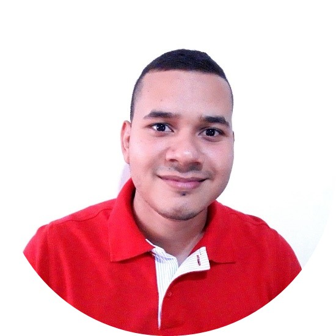

Acerca de mi:
Profesional con iniciativa emprendedora, innovador, creativo, capacidad investigativa, trabajo en equipo, capaz de apoyar a la gerencia en la optimización de recursos que generen desarrollo con la aplicación de conocimientos integrales en las áreas de la empresa que la afecta, proponiendo alternativas de solución en la toma de decisiones.
Contacto
316 532 76 01
aneduardotejada@gmail.com
Cali ,Valle del cauca
Habilidades
- Programación
- Conocmiento en Bases de Datos
- Gestión de Pruebas
- Capacidad de Análisis
- Atencion al Detalle
- Autoaprendizaje
- Comunicación Asertiva